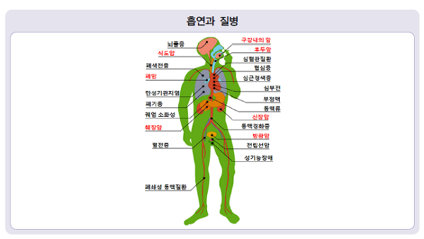

담배의 해로운 점
20세기에 담배는 1억 명을 죽였습니다. 지금 추세라면 21세기에는 10억 명의 죽음이 담배로 인해 초래될 것입니다. 흡연으로 인해 매년 세계인구의 600만 명이 사망합니다. 그 중 500만 명은 과거, 또는 현재 흡연자이고 60만 명은 한번도 담배를 펴본 경험이 없는 간접흡연에 노출된 비흡연자입니다.
담배 한 개피는 약 11분의 수명을 단축하고 흡연은 사용자의 거의 절반을 사망에 이르게 합니다. 지속적인 흡연자는 비흡연자보다 평균 10년 일찍 사망하며 주변의 흡연자인 80대 90대 노인들이 건강한 이유는 다른 흡연자들은 이미 대부분 사망했기 때문입니다. 흡연자 10명중 5명은 담배 때문에 죽습니다. 흡연은 사망원인 중 노력으로 막을 수 있는 가장 큰 원인입니다.
 |
간접흡연의 위험
담배연기는 발암물질이기 때문에 간접흡연은 반드시 사람을 해칩니다. 간접흡연에는 안전한 허용용량이 없습니다. 거의 절반의 어린이가 담배연기에 오염된 실내공기를 마시며 40% 이상의 어린이가 최소한 한 명 이상의 흡연자 부모를 두고 있습니다. 미국에서는 흡연자 8명이 사망할 때마다 간접흡연자 1명이 사망합니다. 가장 끔찍한 결과는 2004년, 어린이 사망의 31%는 간접흡연과 연관되어 사망하였다는 사실입니다.가정 내 흡연은 담배를 피우지 않는 가족의 폐암 발생위험을 2배, 급성 호흡기 질환 5.7배 높이며 흡연하는 아버지와 함께 자라는 아이는 출생 후 5세가 될 때까지 약 102갑의 담배를 피운 것과 같은 위험이 있습니다. 또한 흡연자 남편과 사는 아내에서 폐암이 30% 심장질환이 50%가 더 증가합니다.
담배연기와 발암물질
답배연기에는 4천 가지 이상의 화학물질이 포함되어 있고 이중 최소 250종은 해롭다고 알려져 있습니다. 그 중에서도 69종은 발암물질입니다. 성인에서 간접흡연은 심각한 심혈관질환(심장마비, 뇌출혈, 뇌경색등)과 호흡기 질환(만성 폐쇄성 폐질환, 폐암등)을 일으킵니다. |
 |